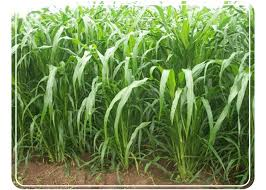
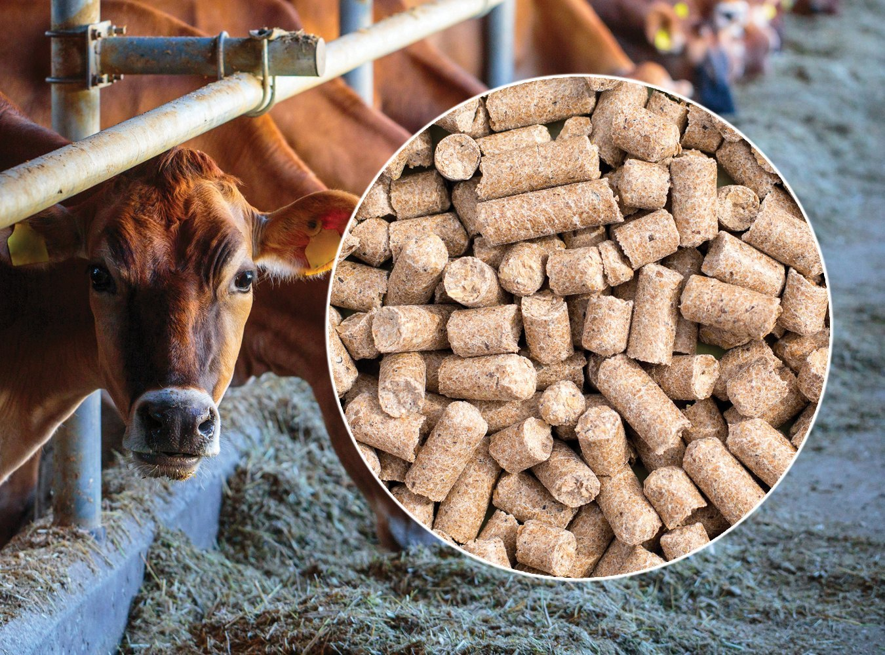
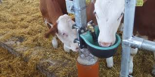
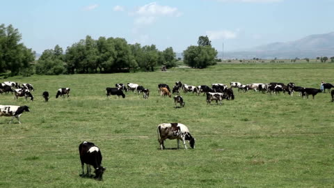

🥗 Balanced Feeding
We feed our animals with fresh green fodder, vitamin-mixed supplements, and clean water — twice daily. A balanced diet leads to high-quality milk.

🥬 Daily Feeding Routine
Organic, seasonal greens ensure animals stay strong, healthy, and stress-free. We also include dry feed like cotton cake and wheat straw.


🧼 Clean Environment
Our dairy maintains hygiene with daily shed cleaning, clean water bowls, and enough space for natural movement. Regular vet checkups ensure animal health.

